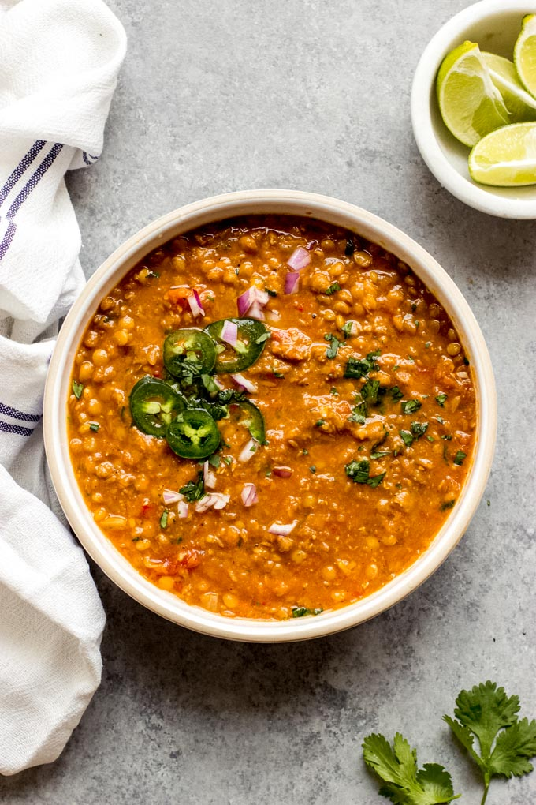

Dhaal

Ingredients
- Ghee
- 3 tbsp Turmeric
- 3 tbsp Ground Cumin
- 3 tbsp Ground Coreander
- 5 cloves Garlic
- 1 Chili
- 3-4 Onion(s)
- 200g Red Lentils
- 100g Green Lentils
- Small Can Tomato Paste
- Approximately one liter of hot water
Steps
- Chop the onion, garlic and chili
- In a large pot, warm up the ghee on medium heat
- Add the spices to pot and simmer until a lovely smell appears
- Add the onion and fry until soft and sweet, about 5 minutes
- Add the chili and garlic and fry for an additional minute
- Add the tomato paste and fry it a little
- Add The water, boullion and lentils and stir it
- Let it simmer for at least half an hour. More won't hurt. Keep an eye that it doesn't become too dry, if so then add more water.